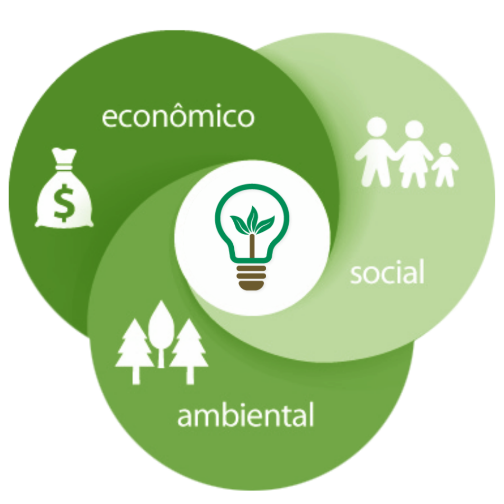
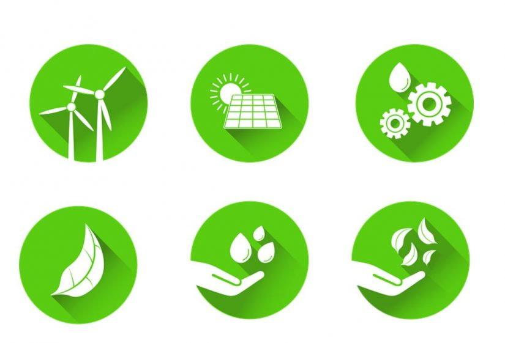

Sustentabilidade é um conceito relacionado ao desenvolvimento sustentável, ou seja, formado por um conjunto de ideias, estratégias e demais atitudes ecologicamente corretas, economicamente viáveis, socialmente justas e culturalmente diversas.
A sustentabilidade serve como alternativa para garantir a sobrevivência dos recursos naturais do planeta, ao mesmo tempo que permite aos seres humanos e sociedades soluções ecológicas de desenvolvimento.
Existem diversos conceitos ligados a sustentabilidade, como o crescimento sustentado, que é um aumento na economia constante e seguro; e a gestão sustentável, que é dirigir uma organização valorizando todos os fatores que a englobam, e é essencialmente ligado ao meio ambiente.
Etimologicamente, a palavra sustentável tem origem no latim sustentare, que significa "sustentar", "apoiar" e "conservar".
Sustentabilidade ambiental e ecológica é a manutenção do meio ambiente do planeta Terra, mantendo a qualidade de vida e os ecossistemas em harmonia com as pessoas.
A sustentabilidade nas empresas está ligada à sustentabilidade econômica, que é alcançada através de um modelo de gestão sustentável, ou seja, um modo que incentiva processos que permitam a recuperação do capital financeiro, humano e natural da empresa.
A sustentabilidade social é o conceito que descreve o conjunto de medidas estabelecidas para promover o equilíbrio e o bem-estar da sociedade.